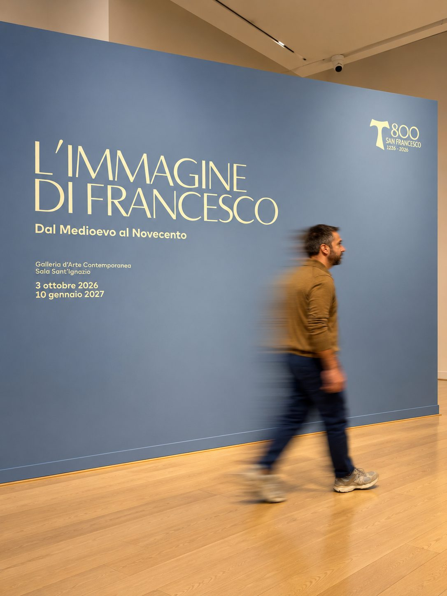

Appunti di un albergatore dalla mostra "L'immagine di Francesco. Dal Medioevo al Novecento".

Prima i numeri, perché sono onesti. Nel 2019 la provincia di Arezzo pesava circa il 4% degli arrivi in Toscana, contro il 37% di Firenze. Nel 2025 abbiamo contato 786.788 arrivi e oltre 2,2 milioni di presenze. Molti visitatori, poi, arrivano la mattina e ripartono la sera, senza fermarsi a dormire. La cultura, da sola, non è ciò che porta qui i grandi flussi.
Poi c'è quello che i numeri non dicono. Il Teatro delle Virtù, la mostra su Vasari, ha venduto più di 38.000 biglietti in quattro mesi, con prenotazioni arrivate da Stati Uniti, Giappone e Brasile. Quando una proposta ha una ragione forte per esistere, le persone la trovano.
Io l'ho vissuto in prima persona alla mostra "L'immagine di Francesco. Dal Medioevo al Novecento", nella Sala Sant'Ignazio della Galleria d'Arte Contemporanea, dal 3 ottobre 2026 al 10 gennaio 2027, per gli 800 anni dalla morte di San Francesco. Una sala blu, una luce calda, un tondo circondato da frutti e foglie. Una visita così non sposta le statistiche, ma sposta chi la vive.
Per me è questo il senso dell'experientismo. Non conta solo quanti arrivano, conta cosa si portano a casa. Un viaggio ben riuscito si misura dal ricordo che lascia.
Viva la cultura. Viva la bellezza.
Michele Passalacqua
Uso cookie di misurazione per capire quali campagne pubblicitarie portano contatti. Puoi accettarli o rifiutarli: il sito funziona allo stesso modo. Informativa